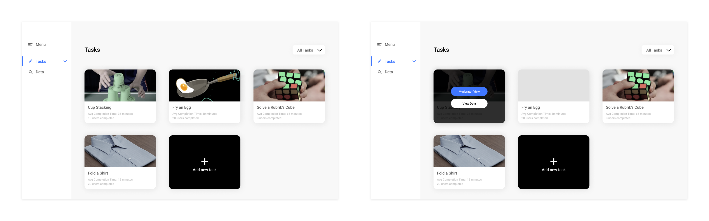
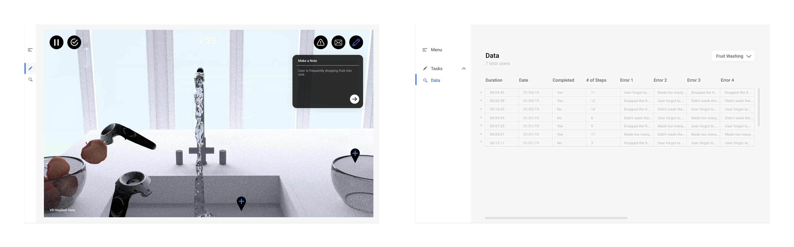
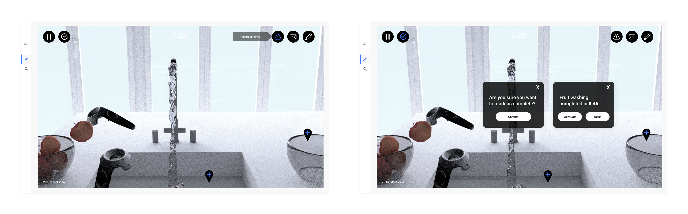
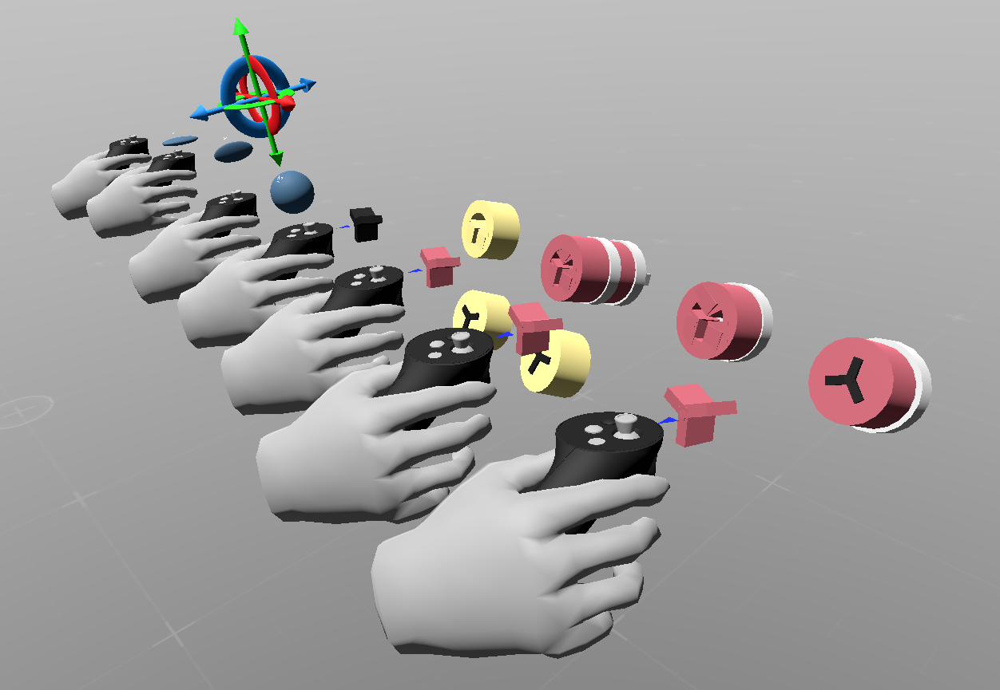

Unity (C#)
Maya/Blender
Figma
Tools
Team
Marisa Lu
Lucas Ochoa
Annie Huang
Mary Safy
Riva Fouzdar
Lucas Ochoa
Annie Huang
Mary Safy
Riva Fouzdar
Timeframe
Jan – May 2019
Role
Technical Lead
Design
Design
project overview
The notion of robotic personal assistants has long captured our collective imagination, from the mechanical automata of ancient China to the cyborg tin woodmen and intelligent sidekicks of pop culture. The hardware is already here, so where are these vaunted robots of science fiction?
Our client was the Robots Perceiving and Doing Lab at Carnegie Mellon University. Their goal is to use machine learning to create these personal robotic assistants. The goal of the project was to help the lab build a usable, intuitive virtual reality (VR) environment to faciliate the collection of user demonstrations of tasks. Once the data is collected, machine learning techniques use the demonstrations to teach robots to complete tasks. This data and method of robot teaching can allow for remote instruction, or teleoperation, for tasks that cannot be done in person.
primary questions
- Is a moderator necessary for the collection of task data? How will errors, time, task completion be tracked in the environment? Should a researcher be moderating task collection or should users self-moderated?
- How would the user interact with the interface and the environment? How can we make the environment easy to navigate and easy to complete precise actions?
- What is the primary user perspective while operating the robot? Should the VR interface happen in first person, third person, or both?
- How do we account for latency between real time robot movement and user input?

solution
Our solution consists of 3 parts, with each part addressing a different aspect. There are two major applications: the VR environment with its spatial interfaces and control mechanisms and a 2D interface for the researcher moderating the task collection from the VR user. We also created a final proof of concept video to showcase the VR interface in its future state.
Our solution addressed these problems by:
- Moderated vs. UnmoderatedHad the VR interface moderated by a researcher who would log errors, send messages, and track time.
- Augmenting PrecisionDesigned a cursor (ghost end effector) and cursor marker (ghost trail) to specific points within the VR environment for precise and accurate navigation.
- First vs. Third PersonCombined first and third person to take advantage of the benefits of both perspectives.
- Path Planning vs. Live ControlDisguised lag of real-time robot movement from user’s movement in VR environment.
prototype
The prototype is the actual working demo that the team created to document and test novel interactions for VR teleoperation. In the video, the user's task to try to teach the robot to pick up the fruit and put it in the bowl.
moderator interface
The moderator interface allows a researcher to document, record, and mark data for task collection.
  the future
The below video is an additional exploration of what the future of VR teleoperation might look like.
design process
user studies
Before jumping into designing VR, we had to first understand the design patterns and pitfalls of VR. To help us answer this question, we conducted exploratory think-aloud usability tests with 11 participants, who all had little or no experience using VR. These participants went through think-aloud exercises with 3 existing VR programs — Microsoft Maquette, Virtual Virtual Reality, and Google Earth VR. With this study, we aimed to answer the following questions:
- What are the pain points and points of confusion for a user in a VR environment given instructions and a series of small tasks?
- What design patterns are commonly being used in popular VR applications? (for menus, cursors, controls, etc.)

Moving forward from these studies, we kept these four things in mind:
- Use clear forward feedback and instructions to allow for easier onboarding.
- Current VR UIs are lack in discoverability and providing meaningful feedback and guidance.
- 2D UI paradigms do not necessarily mix with 3D UI paradigms.
- Physical limitations such as space must be kept in mind.
storyboards
We created multiple storyboards to define potential solutions to the various usability problems faced in VR environments. The storyboard details how a user would enter the VR environment, view a tutorial for a cup stacking task, and then attempt to complete that task. Below is an aggregated storyboard detailing important interactions that were discussed.

3d prototyping
To get a better understanding of what were the key interactions, the team did some whiteboxing in Microsoft Maquette. In this process, we iterated on different controller interactions and environment setups.





defining terms
Taking our storyboards and prototypes, we conducted speed dating session with 6 users. Through these sessions, we sought to inform ourselves on key factors. After gathering the feedback, the team discussed and defined key terms and approaches.